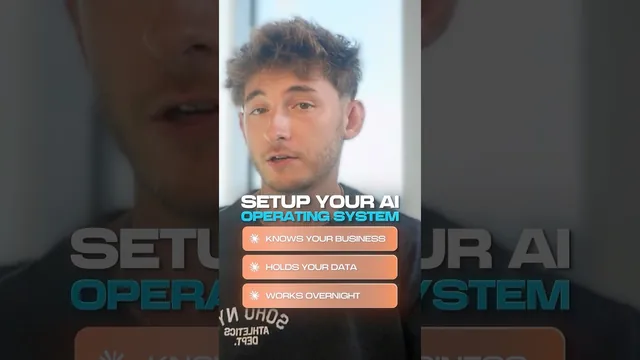

AI 운영체제 세팅하는 법

원본 영상 보기 →
- 음성으로 시작하는 온보딩이 진입장벽을 낮춘다
- "연결"이 자동화의 전제 조건이다
- 반복 업무 하나를 골라 스킬+스케줄로 완성하는 것이 핵심 전환점
한 줄 요약
Claude 하나로 비즈니스 전체를 파악하고 돌아가는 "AI 운영체제"를 하루 만에 세팅하는 5단계 방법을 소개하는 영상이다.
전체 내용 정리
Claude 프로젝트에 음성으로 비즈니스 맥락을 쏟아붓고 문서로 저장하기
Claude 안에 프로젝트를 하나 열고 음성 모드를 켠 다음, 10분 동안 자기 비즈니스에 대해 말로 설명하는 것부터 시작한다. 무엇을 파는지, 누가 사는지, 가격은 얼마인지, 사업이 어떻게 돌아가는지, 지금 뭐가 문제인지를 그대로 이야기하면 된다. 그다음 Claude에게 방금 말한 내용을 깔끔한 비즈니스 컨텍스트 문서로 정리해서 프로젝트에 저장해 달라고 요청한다. 이렇게 해두면 그 프로젝트 안의 모든 대화가 내 비즈니스를 이미 알고 있는 상태에서 시작된다.
흩어진 데이터를 데이터베이스로 모아 Claude가 직접 읽게 만들기
두 번째 단계는 Claude가 실제로 읽을 수 있는 형태로 데이터를 정리하는 것이다. 인스타그램 DM, 폼 응답, 이메일, 통화 녹취, 고객 기록을 전부 내보내서 Supabase 같은 데이터베이스에 적재한다. 이렇게 하면 "누구랑 얘기했는데 팔로우업을 안 했는지" 같은 질문을 던졌을 때 실제로 근거 있는 답을 받을 수 있다. 세 번째 단계는 Claude 설정의 커넥터(connectors)에서 Gmail, 캘린더, CRM 등 매일 쓰는 툴들을 직접 연결하는 것이다. 연결이 끝나면 여기저기 복사-붙여넣기 하지 않아도 Claude가 비즈니스 전반의 정보를 넘나들며 작업할 수 있다.
가장 반복적인 업무를 스킬로 만들고 스케줄에 태우기
네 번째 단계는 가장 자주 반복하는 업무를 하나의 스킬(workflow)로 만드는 것이다. 예시로는 대화 기록을 읽고 구매에 가장 가까운 10명을 골라낸 뒤, 각각에게 보낼 첫 팔로우업 메시지 초안을 작성하는 워크플로우를 Claude에게 만들어 달라고 요청하는 방식이 나온다. 다섯 번째 단계는 이 워크플로우를 스케줄에 올리는 것으로, 매주 한 번씩 혹은 필요할 때마다 자동으로 실행되도록 Claude에게 요청하면 된다.
핵심 인사이트
- 음성으로 시작하는 온보딩이 진입장벽을 낮춘다: 문서를 직접 정리해서 업로드하는 대신 그냥 말로 설명하고 Claude가 정리하게 하면, 비즈니스 컨텍스트를 세팅하는 데 드는 시간과 심리적 부담이 크게 줄어든다.
- "연결"이 자동화의 전제 조건이다: 데이터를 데이터베이스로 모으고 앱을 커넥터로 연결하는 단계가 없으면, Claude는 아무리 똑똑해도 실제 비즈니스 정보에 접근할 수 없어 반쪽짜리 도구에 머문다.
- 반복 업무 하나를 골라 스킬+스케줄로 완성하는 것이 핵심 전환점: 대화형 챗봇에서 "일하는 시스템"으로 넘어가는 지점은 특정 반복 업무를 워크플로우화하고 자동 실행 주기를 걸어주는 순간이다.
오늘 당장 해볼 것
- Claude에서 새 프로젝트를 만들고 음성 모드를 켜서 10분간 내 사업(판매 상품, 고객, 가격, 현재 문제점)을 설명한 뒤, "지금까지 말한 내용을 비즈니스 컨텍스트 문서로 정리해서 저장해줘"라고 요청한다.
- 인스타그램 DM, 이메일, 폼 응답 중 하나만이라도 내보내기(export)해서 Supabase 같은 데이터베이스에 올려보고, "누구한테 팔로우업을 안 했는지" 질문해본다.
- Claude 설정의 Connectors 메뉴에서 Gmail이나 캘린더 하나를 연결해보고, 반복적으로 하는 업무 하나(예: 잠재고객 팔로우업 초안 작성)를 워크플로우로 만들어 달라고 요청한다.